KARABÜK ÜNİVERSİTESİ
MÜHENDİSLİK FAKÜLTESİ
Staj Defteri
Öğrenci Numarası: |
… |
|---|---|
Adı Soyadı: |
… |
Bölümü: |
… |
Staj Türü: |
… |
KARABÜK ÜNİVERSİTESİ
MÜHENDİSLİK FAKÜLTESİ
Staj Genel Bilgileri
Staj Yapan Öğrenci
|
|||||||||||||||||||||||||
|---|---|---|---|---|---|---|---|---|---|---|---|---|---|---|---|---|---|---|---|---|---|---|---|---|---|
Staj Yapılan İş Yeri
İletişim |
|
||||||||||||
|---|---|---|---|---|---|---|---|---|---|---|---|---|---|
İş Yeri |
|
İş Yeri Yetkilisi
Yetkili |
|
|---|
Staj Komisyonu
Defter |
Kontrol Eden Öğretim Elemanın Adı Soyadı: |
Sonuç |
|
|---|---|---|---|
Tarih: |
Kabul Ret | ||
İmza: |
Onay$$\left( \begin{array}{r} \text{Bölüm Başkanı} \\ \text{İmza, Kaşe} \end{array} \right)$$ |
Siemens Enerji, 2020 yılında kurulan yeni bir şirket olsa da köklerini 1866 yılından beri faaliyetine devam Siemens’ten alıyor. 90 ülkede 90 bin çalışanı var. Şirketin örgütsel yapısı ise şöyledir.
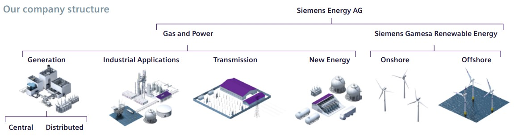
Generation Bölümü: Elektrik enerjisi üretmek için kullanılan büyük gaz ve buhar türbinleri, jeneratörler, anahtar-teslimi enerji santralleri, kontrol sistemleri, bu güç santrallerinin bakım ve tamiri, modernleştirme ve dijitalleştirme hizmetleri.
Industrial Applications: Endüstride kullanılan kompresörler, gaz ve buhar türbinleri, jeneratörlerlerin satışı, çözümleri ve servisi.
Transmission: Hava ve gaz yalıtımlı şalt cihazları, transformatörler, buşingler gibi ürünler, elektrifikasyon, iletim, dağıtım çözümleri.
New Energy Business: Hidrojen (elektroliz), enerji depolama (batarya, hidrojen, ısı), ısı pompası.
Siemens Gamesa Renewable Enegy: Rüzgâr türbinleri. Özellikle Offshore’da rakiplerine göre daha iyi bir konumdadır.1 Şu anda Siemens Enerji, Siemens Gamesa’nın %67’lik hissesinin sahibidir.
İlk Telgraf Sistemi (1856)
Silahtarağa Elektrik Santrali (1914)
Eskişehir ve Turhal Şeker Fabrikalarının Buhar Türbinleri (1935)
Ambarlı Termik Santrali (1989)
%51 Dünya Etkinlik Rekoru, Dizel Yakıtla çalışıyor.
Samsun Doğalgaz Çevrim Enerji Santrali (2015)
%61 Dünya Etkinlik Rekoru
.
İŞ YAPRAĞI |
Yapılan İş Tanımı |
İş Tarihi |
Sayfa Numarası: |
1 |
|---|---|---|---|---|
İki adet akademik bir makaleyi okuyup anlamak ve bu makaleden anladıklarını eleştiri ve yorumlarla yazıya geçirmek. |
… |
İş Yeri Yetkilisi İmza, Kaşe |
||
Endüstriyel Uygulamalar Bölümü, Saha Servisi Müdürü Yüksel Bey, bana iki tane akademik makale verdi. Bu makaleleri okuyup anlamamı, anladıklarımı eleştiri ve yorumlarımla beraber yazıya dökmemi ve bu ödevlerin bitiminde her biri için ayrı sözel mülakat yapacağını söyledi.
Bu makaleler şunlardı:
“A history of research in service operations: What’s the big idea?“ (Richard B. Chasea, Uday M. Apteb,*) [1]
Ve
Colen, P.J. & Lambrecht, M.R., 2012. "Cross-training policies in field services," International Journal of Production Economics, Elsevier, vol. 138(1), pages 76-88. [2] idi.
**Hayatımda ilk defa, akademik bir makaleyi baştan sonra okudum desem yanlış olmaz. (Mühendislik alanında). Bakış açımı değiştiren, çok şeyler öğrendiğim bir deneyimdi. Maka
İlk makale; tamamen sözel içerikli. Hizmet sektörü özelinde (imalat sektörü kapsam dışı) “operasyon yönetimi” alanında yapılan akademik çalışmaları inceliyor. Bu tarihsel inceleme; Adam Smith’in fikirlerinden başlayıp -2000’li yıllara- Daniel Kahneman’ın “Davranışsal Ekonomi” çalışmalarına kadar uzanıyordu.
Makale de atıf yapılan kitaplardan birkaçını okumuş olsam da ilk başlarda, makaleyi anlamak benim için kolay olmamıştı. Makaledeki teknik kavramlar, endüstri mühendisliği kavramları3 idi. Önce bu kavramları öğrenip ardından makaleye çalıştım.
İkinci makale de endüstri mühendisliği alanındandı. Fakat bu makalenin ilkinden iki farkı vardı:
Konusunun daha özelleşmiş olması.
Matematik içermesi.
Bu makale, ilkine göre daha zor gibi görünse de ilk makaleden edindiğin altyapı (Hem bilgi hem de makale okuma tecrübesi) sayesinde pek fazla zorlanmadan bitirdim. 4
İki ödev için ortak söyleyeceklerim:
Ödevler, kesinlikle orijinal makalelerin özeti değildir, çevirisi değildir.5
Orijinal makaleleri, kendi cümlelerimle özgünleştirmeye de çalışmadım.
Birebir alıntılar da yaptım ancak bu alıntılar genele oranla az.
Genel olarak makalelerden anladığımı, yorumlarımı, eleştirilerimi6 (J Kruger 1 ve D Dunning, 1999) [3] ve konu hakkında araştırma yaparken öğrendiklerimi, hatırladıklarımı, ilham aldıklarımı konu dışına çıkmak pahasına yazdım.7
İŞ YAPRAĞI |
Yapılan İş Tanımı |
İş Tarihi |
Sayfa Numarası: |
2 |
|---|---|---|---|---|
Makale Ödevi 1 |
… |
İş Yeri Yetkilisi İmza, Kaşe |
||
Hizmet Operasyonları Hakkında bir Deneme
Bu yazı; A history of research in service operations: What’s the big idea? (Richard B. Chasea, Uday M. Apteb,*) makalesi temelinde, hizmet operasyonları ile ilgili sınırlı kişisel tecrübe ve okumaların bir ürünüdür.
Güncel arkeolojik kayıtlara göre, modern insan 200 bin yıldır bu evrende yaşamaktadır. İnsanoğlu bu sürede, soyunu 6 bin kuşak ilerletmiş ve ilk tarım faaliyetlerine 20 bin yıl, sanayileşme de 200 yıl başlamış olsa da hizmet sektörü ile beraber başat faaliyet alanı olması sadece 100 yıllık bir olgudur. Yukarıdaki verileri kullanarak;
(200bin YIL÷6bin KUŞAK) = 33 YIL/KUŞAK
| Kuşak | Meslek | |
|---|---|---|
| (200bin - 20bin YIL) ÷ (33YIL/KUŞAK) = | 5394 | Avcılık-Toplayıcılık |
| (20bin – 100 YIL) ÷ (33YIL/KUŞAK) = | 603 | Çiftçilik |
| (100 YIL) ÷ (33YIL/KUŞAK) = | 3 | Çiftçilik dışında |
Kolaylık olması açısından tutarlılığı bozmamak kaydı ile tablodaki veriler, hesaplamalar yuvarlanmış, biraz değiştirilmiş, keskin sınıflara-tarihlere ayrılmış ve genel olarak gelişmiş ülkeler için geçerlidir. Örneğin, ülkemizde çoğunluğun mesleği, sadece son 2 kuşaktır çiftçilik dışındadır ya da Afganistan gibi gelişmemiş birçok ülkede işgücünün çoğunluğu tarım ile uğraşmaya devam etmektedir. Hatta bazı ülkelerin bazı bölgeleri için konuşursak, tarıma bile geçmemiş olan tıpkı 6bin kuşaktır dedelerinin yaptığı gibi avcılık-toplayıcılıkla uğraşan küçük kabileler mevcut. Öyleyse, bu değişim dünyanın her yeri için geçerli değil.
.
.
İŞ YAPRAĞI |
Yapılan İş Tanımı |
İş Tarihi |
Sayfa Numarası: |
3 |
|---|---|---|---|---|
Makale Ödevi 1 |
… |
İş Yeri Yetkilisi İmza, Kaşe |
||
2. Sonraki Nesiller?
Atalarımız için çıkardığımız meslek-kuşak tablosunun bir benzerini gelecek nesiller için yapmaya kalkışırsak muhtemelen tablonun taslağını toptan değiştirmemiz gerekecek.
| Bir Kişinin meslek yaşamı | ||
|---|---|---|
| İlk 10 yılı = | Yapay zeka robot sahipleri arasındaki anlaşmazlıklar konusunda ihtisaslaşmış avukat | |
| 10 ile 20. yılı = | Ülkesinin Adalet Bakanlığı, y.z robotlarına avukatlık yapabilme izni vermesi sonucu, kısa zamanda işsiz kalması | |
| 20 ile 30.yılı = | Fizik ve Jeoloji eğitimi de alıp Mars’ta meydana gelen kazaları inceleyen kaza kırım ekibinin hukukçu üyesi olarak çalışması |
3.Sanayiden Hizmete Doğru
Gelişmiş ülke ekonomilerinde, hizmet sektörünün payı giderek artmaya devam etmektedir. Sanayi Devrimi, işgücünün tarımdan uzaklaşıp üretime kaymasına zemin hazırladı. O dönemde; madencilik ve tarım, birincil; üretim ve sanayi ise ikincil; arta kalan ekonomik faaliyetler ise üçüncül ekonomik etkinlikler olarak görülüyordu. Marksist-Leninist Sosyalist rejim mirasına sahip ülkeler, üçüncül ekonomik faaliyetleri baskılayan politikalar izliyorlardı.
Çin’in bankacılık ve finans kurumlarında yaşadığı sıkıntıların ana kaynağı, makale yazarlarının iddia ettiği gibi üçüncül sektör etkinliklerindeki deneyim eksikliğinden değil, daha çok süregiden bireysel düşüncenin gelişmemesi ve şeffaflıktan uzak, hesap vermeyen yöneticiler ve o kişilerin yönettiği kurumlar sebebiyle bu sorunları yaşıyorlar olmaları daha muhtemel.
.
İŞ YAPRAĞI |
Yapılan İş Tanımı |
İş Tarihi |
Sayfa Numarası: |
4 |
|---|---|---|---|---|
Makale Ödevi 1 |
… |
İş Yeri Yetkilisi İmza, Kaşe |
||
4.ilk Çalışmalar ve İnsan-Fonksiyon
Ulusların Zenginliği kitabında ‘üretken olmayan ekonomik etkinlikler’ adı ile ‘Servis Sektörü’ kavramına işaret eden ilk kişi Adam Smith (1776) idi. Zamanı iki yy. kadar ileri sardığımızda, ABD ve diğer gelişmiş ülkelerde artık istihdamın büyük çoğunluğunu hizmet sektörü oluşturuyordu.
Hizmet sektörünün mal üretiminde girdi olarak kullanılması hizmet ile mal arasındaki anlamsız hale getirmiştir. Hizmet sektörünün büyümeye devam etmesi ve buna karşılık verimlilik artışının olmaması hizmet operasyonlarını önemli bir araştırma alanı haline getirdi.
Hizmet operasyonları alanında yapılan akademik çalışmalardan ve başarılı olmuş uygulamaların ilk örneklerinden bahsedelim. Taylor'ın Bilimsel Yönetim İlkelerini uygulayan Leffingwell yapılan işin en hızlı ve en basit yolunu bulup çalışanların da bu yolu öğrenip sürekli uygulamasını istemiştir. Fakat Taylor’ın makineler üzerinde başarıyla çalışan bilimsel yönetim ilkeleri söz konusu insan olunca aynı başarıyı gösteremedi. Çünkü makinalar birer fonksiyon gibidir. Örneğin, elimizde birbirinin aynı iki fonksiyon (makine) olsun. f1 fonksiyonu(birinci makine) x girdisine 3x çıktısını, f2 fonksiyonu(ikinci makine) x girdisine 3x çıktısını her zaman verebilirken (makinenin bozuk olmaması, iyi tasarlanmış olması koşuluyla) iki insan ise aynı girdiye farklı çıktılar verebilir hatta aynı insan aynı girdiye farklı zamanlarda farklı çıktılar da verebilir.
.
İŞ YAPRAĞI |
Yapılan İş Tanımı |
İş Tarihi |
Sayfa Numarası: |
5 |
|---|---|---|---|---|
Makale Ödevi 1 |
… |
İş Yeri Yetkilisi İmza, Kaşe |
||
5.Hizmet Operasyonlarının Başarılı ilk Örneklerinden: McDonald's
Üretim hattı yaklaşımı, en ince ayrıntısına kadar düşünülmüş operasyon ve standartlaşma gibi önemli özellikler McDonald's’ı başarılı kıldı.
McDonald’sın ürünlerdeki standartlaşması öyle iyi boyutta ki hamburger çeşitlerinden biri dünyada ülkelerin kişi başına düşen satın alma gücü ve ulusal para birimlerinin diğer ülke para birimleri karşısındaki değerini gösteren bir ölçüt olarak kullanılabiliyor.
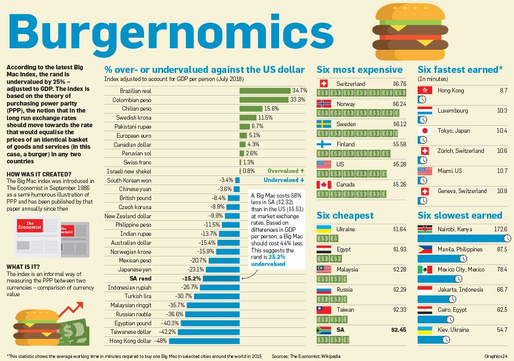
.
İŞ YAPRAĞI |
Yapılan İş Tanımı |
İş Tarihi |
Sayfa Numarası: |
6 |
|---|---|---|---|---|
Makale Ödevi 1 |
… |
İş Yeri Yetkilisi İmza, Kaşe |
||
6.Hizmet Operasyonlarının Başarılı ilk Örneklerinden: Disney ve ..
Disney şirketinin, oyun parkları özelinde başarısını incelediğimizde; talep tahmini hesaplamaları, çizelgelemeleri, günlük ziyaretçi sayısı, hangi oyun aletlerine ne kadar biniyorlar, restoranlardaki yemek fiyatları hangi düzeyde olmalı? Oyunların eğlencesine kapılan ziyaretçiler, yüksek yemek fiyatlarını umursamıyorlar mı? Yoksa, dışarıda her zaman 100 TL’ye satın alabildiği standart menünün 250tl ye satıldığını görmesi, ziyaretçiyi öfkelendirip oyun parkını terk etmesine, oyun aletlerinde harcanacak 2000tl’nın kaybı anlamına mı geliyor? Ya da bedava açık-büfe olduğunda ziyaretçilerin oyun parkı harcamaları fazla mı oluyor? Harcama davranışlarını, ziyaretçilerin yaşlarına, ülkelerine vd. özelliklerine gruplandırdığımızda ne türden anlamlı bilgiler elde ediyoruz? Veya 3500 tane okulun tatil dönemlerini günü gününe takip etmek gibi ayrıntılı, özenli operasyon yönetim yaklaşımlarını uygulamanın abartı, gereksiz, zihin bulandıran, Deneycileri ‘Meleklerin cinsiyetini tartışmak’ ile suçlayan; Görkemli fantastik heykeller, yüksek basslı müzikler eşliğinde bol ‘heyecan’ içeren oyun aletleri ile herhâlvekarda, zaten yüksek gelir elde edeceğini savunan okurlar var ise onların bu sanı’larını kökünden yıkacak, operasyon yönetimi disiplinin önemi konusunda onları kesinkes ikna edecek bir operasyon yönetimi çalışması yapıldı ülkemizde. 1 milyar dolarlık fon ile desteklenen bu vaka çalışmanın bulgularından birkaç örnek aşağıdadır.8
.
İŞ YAPRAĞI |
Yapılan İş Tanımı |
İş Tarihi |
Sayfa Numarası: |
7 |
|---|---|---|---|---|
Makale Ödevi 1 |
… |
İş Yeri Yetkilisi İmza, Kaşe |
||
7.Kişisel Operasyon Yönetimi Deneyimi
Daha önce yazmış olduğum bir niyet mektubundan kısa bir alıntı:
“Bir yaz tatili döneminde, prefabrik yapı üretimi yapan bir fabrikada 4 ay, aday mühendis olarak çalıştım. Bu kısa iş deneyiminin kazanımlarını kabaca iki maddede sayacak olursam: Biri, çalışma arkadaşlarımdan, müdürlerimden öğrendiğim değerli bilgiler; diğeri ise etraflıca düşünülmüş, titizlikle hesaplanmış, en iyiyi hedefleyen fikirlerin, uygulamada çalışabildiğini görmek. İlk günlerde yapabildiğim pek bir iş yoktu, fabrika içerisinde, Müdür Bey’in peşi sıra dolanıyor (Kendisi izin vermişti.), çalışan işçi ve mühendislerle yaptığı konuşmaları (bilmediğim birçok teknik terim içeren) dinliyor, makinelerin çalışmasını izliyor, not tutuyor, uygun zamanda, uygun kişilere sorular soruyor ve bir de Müdür Bey’ in çok sık olmayan ricalarını yerine getirmeye çalışıyordum. İlerleyen zamanlarda, kendimce fark ettiğim yanlışlıkları, önerileri, dillendirmeye başladım. Neredeyse istisnasız tüm çalışanlar ağız birliği edercesine ortak tepkileri şu minvaldeydi: “Gökberk, şimdi başımıza yeni iş çıkartma, biz bu işi böyle gördük, yıllardır böyle yaparız, bu iş böyle yapılır!” Aldığım bu yanıtlardan sonra üretimi yapılan ürünlerden biri ile ilgili rapor yazmaya karar verdim. Bu ürün, bir yardım kuruluşunun çadırı idi. İlk etapta, gözlemler yaptım. Mevcut üretimin nasıl yapıldığını ve bunun nicel çıktılarını hassas ölçümlere dayandırarak yazdım. (İkna için en bariz yapılan hataları bile rakamlara dayalı olarak ispatlamak zorunda olduğumu anlamıştım.) Ardından üretim sürecinin bütün aşamalarını içeren, mevcut koşullar altında, en yüksek verimliliği vadeden çok ayrıntılı bir üretim planı hazırladım. Plan uygulamaya koyulduğunda; malzemede verilen fireler yaklaşık %30 azalmış, üretim hızı en az iki katına çıkmıştı. Hatta üretim hızı aniden böyle artınca, malzeme stokları çarçabuk erimiş, satın alma bölümü bize malzeme yetiştirmekte zorlanmıştı. (İlk başlarda.) Daha sonra, benden diğer ürünler için de benzer iyileştirme planları hazırlamam istenmişti…”
300 kişinin çalıştığı, alanındaki en büyük pazar paylarından birine sahip bir şirketin bu denli verimsiz çalışıyor olması beni gerçekten çok şaşırtmıştı. ‘Süreç ve Kapasite Tasarımı’ raporlarını hazırlarken kullandığım teknik bilgi: temel kalkulus ve istatistik, hatta ortaokul matematik müfredatından EBOB-EKOK (Malzeme firelerini neredeyse sıfırlatırken) gibi konulardan ibaretti. Operasyon yönetiminin ne olduğunu ilk defa bu ödev ile öğrenen, daha önce hiçbir kurumsal şirkette çalışmamış birisi bile bu iyileştirmeleri yapabiliyorsa neden diğer çalışanlar bunu yapmıyordu? Acaba bu fabrika istisnai tekil bir örnek miydi? Ülkemizdeki diğer fabrikalarında üretkenlikleri böyle düşük mü? (Tahminim: Evet.) Eğer öyle ise bu çok sevindirici haber. Çünkü mevcut hali hızlıca iyileştirmek hem mümkün hem de fazla sermaye gerektirmiyor.
.
.
İŞ YAPRAĞI |
Yapılan İş Tanımı |
İş Tarihi |
Sayfa Numarası: |
8 |
|---|---|---|---|---|
Makale Ödevi 1 |
… |
İş Yeri Yetkilisi İmza, Kaşe |
||
8. Süreç: Sonuçlardan Daha Önemli Olabilir
HBR dergisinde yayınlanan bir makale, yazarlar “Adil Süreç” adını verdikleri bir kavramı anlatıyor. Bu kavramın, O.Y alanını da derinden etkileyebilecek unsurlar barındırdığını düşündüğüm için burada yazmaya değer gördüm.
Londra’da bir polis, sağa dönüş kuralını ihlal eden kadın sürücüye trafik cezası yazar. Kendisine ceza yazıldığını gören kadın, cezaya itiraz için polisin yanında gider. Sürücü, dönüşün yasak olduğuna dair bir uyarı levhası olmadığını söyleyince; polis de şekli şemalı bozulmuş, yoldan bakınca görünmeyen tabelayı gösterir. İyice öfkelenen kadın, mahkemeye gitmeye karar. Duruşma gününü sabırsızlıkla bekleyen kadın için gün gelir. Mahkemede, tam hikayesini anlatmaya başlayacakken, hâkim; kadını susturur ve (kadının) lehinde kararını verir. Peki kadın, ne hisseder? İçinin yağı erimiş? Aklanmış? Mutlu? Muzaffer? Hiç birisi değil. Kadın hayal kırıklığını uğramış ve üzülmüştür [4].
Acaba kadın, neden mutlu olmak yerine üzüntülü ve hoşnutsuzdur. Halbuki, kadın mahkemeyi kazanmıştır. Sonuç istediği gibidir. İşte burada adil süreç kavramı devreye giriyor. Sonuçlar önemli olsa da sonuçları üreten süreçlerde en az sonuç kadar önemlidir. Makalede yazmıyor ancak şu ileri önermeyi yapabiliriz. Hâkim, kadının kendisini ifade etmesine izin verseydi, savunmasını samimiyetle dinleseydi, onu anladığını hissettirseydi fakat yasalar gereği, trafik cezasının doğru olduğunu, ceza iptalinin söz konusu olamayacağını söyleyip kadının aleyhinde karar vermiş olsaydı; büyük olasılıkla; kadın kendisini, lehteki karara kıyasla daha iyi hissederdi.
.
.
İŞ YAPRAĞI |
Yapılan İş Tanımı |
İş Tarihi |
Sayfa Numarası: |
9 |
|---|---|---|---|---|
Makale Ödevi 1 |
… |
İş Yeri Yetkilisi İmza, Kaşe |
||
9.İfade Özgürlüğünün bir Sürü ‘Bonusu’ Var.
11.bölümde anlatılan anekdot, ifade özgürlüğünün de ne kadar önemli bir hak olduğunu bize hatırlatıyor. Davacı, yargıçla konuşurken; çocuk, anne-babasıyla konuşurken; vatandaş, vekili ile konuşurken; ya da bizi ilgilendiren kısmıyla ast, üst’ü ile konuşurken; makam, kişi fark etmeksizin düşüncüler rahatlıkla ifade edebilmelidir. Peki neden?
Bir operasyon yöneticisi, çalışanlarının fikirlerini dinler, onları rahatça konuşmaları için cesaretlendirse;
Operasyonu iyileştirecek, üretkenliği arttıracak öneriler gelir. Bu fikirler, operasyon yöneticisine daha önceden düşünmediği yepyeni bir bakış açıları kazandırabilir.
Çalışan fikirlerine değer verildiği, bunlarından bazılarının uygulanmakta olduğunu gördüğünde, kendisini daha iyi hisseder ve tahmin edebileceğimiz gibi şirketini daha fazla sahiplenir.
Cezalandırılmayacağını bildiği için kişi hatalarını itiraf
edebilir.
Böylece;
(a) Hatalar daha kolay giderilebilir (Gizli tutulmadığı için gerekli
kişilerden yardım alınabilir.)
(b) Hatanın, daha büyük yanlışlara evrilme tehlikesi varsa önlenmiş olur.
(c) Bu hatadan, diğer çalışanlar da gerekli dersleri çıkarır, kurumsal hafızaya eklenen bir ‘öğrenilmiş ders’ olabilir.Madde 3)’ü anlatan bir örnek: Uçak gemilerinin pistinde; asfalt yüzeyinin tertemiz, bir çekirdek kabuğunun bile yerde olmaması gerekiyor. Sebebi ise malum, bu cisimler, uçakların motorlarına, tekerlerine ve diğer aksamlarına zarar verebilir.
Konuyla ilgili ABD Donanmasındaki bir uçak gemisinde görevli bir asker, yaşadıkları bir olayı şöyle anlatıyor: ‘Gemi güvertesinde görev yapan arkadaşlarımızdan biri, elindeki cıvatalardan birini kaybettiğini söyledi. Bunun üzerine gemideki tüm operasyonlar durduruldu ve güvertedeki tüm personel, kol kola girip, kaybolan o küçük cıvatayı, buluna kadar aramaya devam ettik. Gemideki hiçbir komutan, cıvatayı kaybettiği için arkadaşımıza kızmamıştı. Hatta öyle ki, hatasını itiraf etme cesareti gösterdiği için neredeyse teşekkür edeceklerdi.
.
İŞ YAPRAĞI |
Yapılan İş Tanımı |
İş Tarihi |
Sayfa Numarası: |
10 |
|---|---|---|---|---|
Rekabet Üstünlüğü |
… |
İş Yeri Yetkilisi İmza, Kaşe |
||
10.Sadece ‘Farklılaştırma’ Yetmez ama Olmalı
Makale boyunca, ülkemizdeki operasyon yönetimi uygulamalarını sürekli yer’dik, eleştirdik. Ancak önümüzdeki birkaç paragraf öyle olmayacak.
Operasyonların rekabet üstünlüğü sağlamaktaki stratejilerden birisi de ürün farklılaştırmasıdır. Hizmet Operasyonlarında da insanlar, ürün veya iyi hizmetten ziyade haz duydukları o ‘Deneyim’ için para öderler. “Deneyim Ekonomisi” kavramını öğrendiğimde aklıma gelen ilk örnek, çoğu kitapta ya da makale yazan Starbucks değil Nusret olmuştu.
Öyle zannediyorum ki deneyim ekonomisi terimini duyduğunda aklına gelen ilk örneğin Nusret olduğu bir insanlar kümesi yapmak istersek. Bu kümenin elemanları ne sadece ben, ne de sadece biz Türkler olur. Dünyanın her milletinden gelen insanların oluşturduğu 1 milyon elemanlı bir küme bile yapabiliriz.
Hizmet operasyonlarında, hizmet sağlayıcı ile müşteri arasındaki etkileşimin en yüksek seviyede olduğu bir ‘Kritik An’ vardır. Bu kritik an, müşterinin hizmetten tatmin olmasını sağlayabilecek en büyük fırsattır. Aşağıdaki fotoğraflardan da anlaşıldığı üzere; Nusret, bu fırsatı son derece iyi değerlendiriyor.
.
.
İŞ YAPRAĞI |
Yapılan İş Tanımı |
İş Tarihi |
Sayfa Numarası: |
11 |
|---|---|---|---|---|
Makale Ödevi 1 |
… |
İş Yeri Yetkilisi İmza, Kaşe |
||
Yıldızlı fotoğrafta müşteri, Nusret’in, kendisine tehlikeli biçimde, çatal ikamesi!! bıçakla biftek ikram etmesini kameraya çekiyor. Büyük olasılıkla; kadın, çektiği videoyu ya da fotoğrafı, lokmasını bitirene kadar, çoktan sosyal medya hesaplarına göndermiş olacaktır. Bir ‘norm’ haline gelen bu türden müşteri davranışlarını, hizmet sektöründeki operasyon yöneticilerinin dikkate alması gerekir. Bu bağlamda, sosyal medya sitelerinin, deneyim ekonomisinin büyümesinde, bir çarpan etkisi yarattığını söylemek de mümkündür.
Birçok okur, deneyim ekonomisi hakkında, eleştirel bir bakış açısına sahip olabilir.
Yıldızlı fotoğraftaki kadın için etin lezzeti neden kalite beklentisinde ilk sırada değil?
Altının lezzeti yok(muş). Özel baharatlar, güzel soslar yerine neden altın tozu ile kaplayarak boşuna maliyetleri arttırdık?
Hizmet tasarımı daha verimli tasarlanamaz mıydı? İnsan kaynakları stratejisinde bir hata yok mu? Nusret, garsonun yapabileceği işi yapmak (yemekleri servis etmek) yerine, neden tüm iş saatini, uzmanlığı olan et pişirme işine ayırmıyor?
Bıçakla yemek tehlikeli değil mi? Neden güvenli şekilde çatalla yemiyorlar?
Beckham, neden eve sipariş vermedi ya da aşçısına yaptırmadı da restorana geldi, bir sürü vakit kaybetti?
Nusret neden ete döktüğü tuzdan fazlasını bile bile yerlere döküyor? Tuzun israf edilmesi ve temizlik için daha fazla işgücü kullanılacak olması maliyetleri arttırmaz mı?
Maduro neden çocuk önlüğüne benzeyen önlüğü taktı? Bir devlet başkanının daha ağırbaşlı olması gerekmez mi?
Kişisel fikirleri saygı duymakla beraber, genel ekonomiyi ilgilendiren çerçeveden baktığımızda; bu minvalden sorgulamalar artık anlamsız, gereksiz, sıkıcı, ve doğru olmayan sorulardır. Genel ülke ekonomisinin gelişmesine katkı sağlıyor, istihdam yaratıyor, insanların hoşça zaman geçirmesine vesile oluyor.
Rekabet üstünlüğündeki farklılaştırma stratejisinin ‘yetmez’ tarafını irdelediğimizde; İster 85 milyon insanın, ister 8 milyar insanın iyi koşullarda barınabilme, iyi bir eğitim alabilme ve sağlıklı iyi beslenmesi gerekliliğini dikkate aldığımızda; maliyetleri olabildiğince düşürerek ucuz ve bol hizmet/üretim ‘i herkese sağlamalıyız.
.
İŞ YAPRAĞI |
Yapılan İş Tanımı |
İş Tarihi |
Sayfa Numarası: |
12 |
|---|---|---|---|---|
Makale Ödevi 2 |
… |
İş Yeri Yetkilisi İmza, Kaşe |
||
Satış sonrası bakım hizmetleri; birçok OEM için önemli bir gelir kalemidir. Bu şirketler, hizmet faaliyetlerini genişlettikçe; bakımından sorumlu oldukları ürünlerin sayısı ve çeşidi artıyor. Her çeşit makinenin (O şirketin ürettiği.) arızasını giderebilecek yetkinlikte uzmanlar yetiştirmek oldukça maliyetli olabilir. Bu sebeple, birçok servis organizasyonu; özelleşmiş tek bir konunun uzmanını yetiştirmeyi yeğleyebilir.
Bu makale, bakım hizmeti satan bir şirketin;
• İş Yükü {ağır, hafif}
• Makine Güvenilirliği: En son yapılan bakımdan itibaren arıza çıkarma davranışı, ihtimali: { }
• Bakım periyodu: { 2000 saat, 3000 saat }
• Sözleşme kapsamı: [Bakımı yapılan sözleşmeli makine sayısı]/[Bakımı yapılan bütün makinelerin sayısı]
Gibi çeşitli senaryolar altında; işgücünün ne kadarının çapraz eğitimli olmayan uzmanlardan oluştuğunda en iyi başarımı gösterdiklerini bulmaya çalışıyoruz.
.
İŞ YAPRAĞI |
Yapılan İş Tanımı |
İş Tarihi |
Sayfa Numarası: |
13 |
|---|---|---|---|---|
Makale Ödevi 2 |
… |
İş Yeri Yetkilisi İmza, Kaşe |
||
Genel Bilgiler, Denklemler, Varsayım ve Kabuller
İki bakım vardır.
1.Önleyici Bakım - Acil Olmayan Bakım: (PM)
2.Onarıcı Bakım – Acil Bakım: (Arızayı tamir etmek için) emergency: e
İki tür iş gücü vardır.
1.Çapraz-Eğitimli Teknisyen (E-FSE)
2. Çapraz-Eğitimli Olmayan Teknisyen (N-FSE)
Yetenek
E-FSE: Hem ‘PM’yapabilir hem de ‘Acil Bakım’ arızaları giderebilir.
N-FSE: Sadece ‘PM’ yapabilir. Arızaları çözemez.
Maliyet: (Yazarların makaleyi yazma nedeni bu ayrıntıdır.)
2*(E-FSE) =3*(N-FSE)
E-FSE’ye verilecek eğitim masrafı, o sürede çalışamamasının yarattığı ‘fırsat maliyeti’ ve maaşı.
Verimlilikler
Verimlilik{(E-FSE)} = Verimlilik{(N-FSE)}
Her iki teknisyenin verimliliklerini karşılaştırmak için ikisinin de yapabildiği iş türü, PM bakımı idi. PM işinde her ikisi de aynı verimliliktedir.
Bütçe
Deneyde sabit bütçe kullandık.
İlk başta 10 tane E-FSE teknisyen vardı.
Ve deney boyunca bütçeyi sabit tutmak için yeni N-FSE’leri işe alırken, E-FSE’lerden bazılarını işten çıkarmak zorunda kaldık.
Örneğin 3 yeni N-FSE işe girdi 2 E-FSE işten çıktı.
Önleyici Bakım (PM):
Hizmet sağlayıcılar PM bakımlarını, belirledikleri tarihlerinden çok erken ya da çok geç yapmamalıdır. Örneğin bakım periyodu T=200 gün ise bakım 180. Gün ile 220.gün aralıklarında yapılmalıdır.
Eğer bakım belirlenen PM periyodunun %10 komşuluğundan çıkarsa, Bakım, PM değil, Acil Bakım, olarak etiketlenir..
.
İŞ YAPRAĞI |
Yapılan İş Tanımı |
İş Tarihi |
Sayfa Numarası: |
14 |
|---|---|---|---|---|
Makale Ödevi 2 |
… |
İş Yeri Yetkilisi İmza, Kaşe |
||
Makine Güvenilirliği:
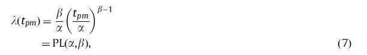
Her makinenin kendine has arıza yapma davranışı var. Ve bu davranışı matematiksel olarak modelleyen her bir makinenin kendi alfa ve beta katsayısı var. Bu alfa ve beta katsayıları, önceden deneysel olarak bulunmuş, bize verilmiş katsaylardır.
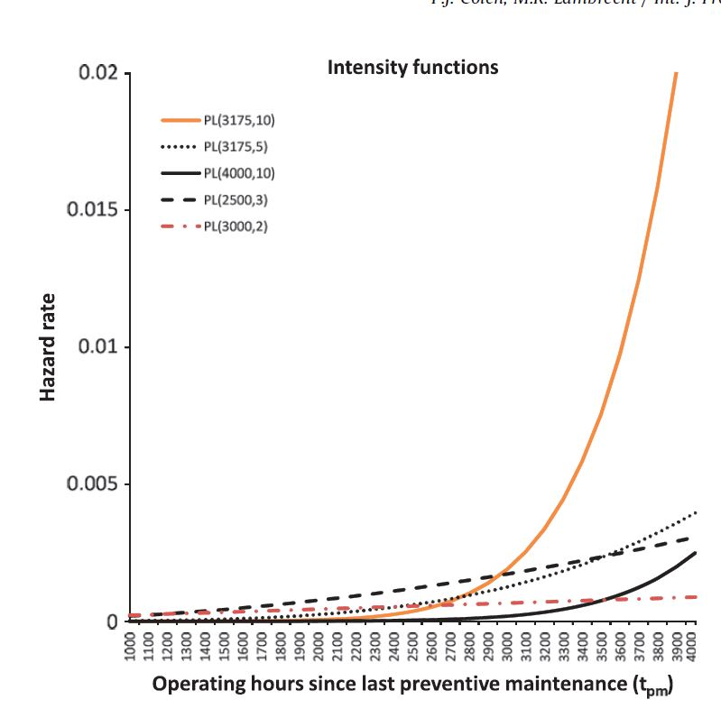
Kullanılabilirlik
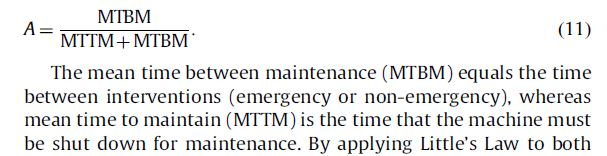
İşgücü Oranı:
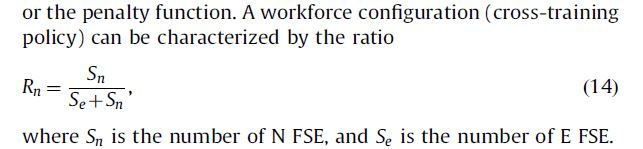
.
İŞ YAPRAĞI |
Yapılan İş Tanımı |
İş Tarihi |
Sayfa Numarası: |
15 |
|---|---|---|---|---|
Makale Ödevi 2 |
… |
İş Yeri Yetkilisi İmza, Kaşe |
||
Ceza Puanı
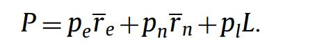
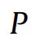
: Müşterinin memnuniyetini ölçer. Bu değer ne kadar AZ olursa müşteri o kadar ÇOK memnun olur.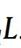
:Normalde acil olmayıp ancak geciken bakım sebebiyle acile dönüşen işlerin, acil olmayan işlere oranıdır.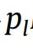
: Acile dönüşen işler için verdiğimiz sabit bir katsayı.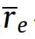
: Acil durum için ortalama tepki süresi (Acil müdahale talebi geldiği zaman - Müşterinin sahasına ulaşma zamanı) .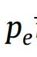
: Acil olan işler için belirlediğimiz sabit bir katsayı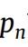
: Acil olan işler için verdiğimiz sabit bir katsayı.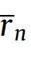
: Acil olmayan durum için ortalama tepki süresi.
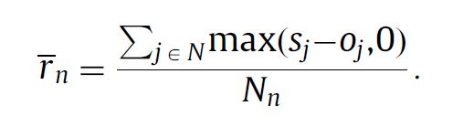
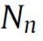
: Toplam acil olmayan bakım sayısı.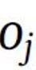
: Müşterinin sahasına varma zamanı.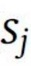
: Müşteri ile önceden mutabık kalınan bakım zamanı.
Burada, şuna dikkat çekmek istiyorum.
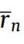
denkleminde pay’ı oluşturan terimlerden herhangi birisi negatif değerde olamaz.Yazarlar, denklemin, 0’dan küçük terimler de barındırmasına izin vermiş olsaydı;
Örneğin, toplamda 5 adet acil olmayan işten 1 tanesine vaad edilen tarihten çok erken gidilerek eklenen büyük değerde negatif terim, geriye kalan 4 tane çok geç kalınmış bakım zamanını telafi ediyor gibi görünüp ortalamasını oldukça küçük gösterebilirdi. Halbu ki 5 müşterisinden 4’u geç kalınan bu bakım hizmetinden memnun değildir. Ayrıca makinesine çok erken bakım yapılan o tek müşterinin de memnun olup olmadığından emin değiliz.
.
İŞ YAPRAĞI |
Yapılan İş Tanımı |
İş Tarihi |
Sayfa Numarası: |
16 |
|---|---|---|---|---|
Makale Ödevi 2 |
… |
İş Yeri Yetkilisi İmza, Kaşe |
||
Benzetim Deneyinden Çıkan Bazı Sonuçlar ve Onların Yorumlanması
Bakım aralığını 2000 saatten 3000 saate çıkardığımızda;
PL(4000,10) makinesinin arıza çıkarma ihtimali çok az artarken,
PL(3175,10) makinesinin ise arıza çıkarma ihtimali ciddi biçimde
artıyor.(2)
veya
PL(3000,2) makinesi, bakım aralığına olan duyarlılığı çok azdır. (Bu az arıza çıkarır demek değil.) Bu makinenin bakım aralığını 2000 saatten 3000 saate çıkması hatta 4000 saate dahi çıkarmış olsak, arıza olasılığının artışı azdır.
Saha servisi çalışanları PM bakımlarını yetiştirmekte zorlanır ve PL(3000,2) makinesinin PM bakımını erteledikleri için evhamlanmalarına gerek yoktur. (PL(3175,10) makinesinde ise tam tersi.)
.
İŞ YAPRAĞI |
Yapılan İş Tanımı |
İş Tarihi |
Sayfa Numarası: |
17 |
|---|---|---|---|---|
Makale Ödevi 2 |
… |
İş Yeri Yetkilisi İmza, Kaşe |
||
N-FSE İstihdamının: Tepki Süresine (Arıza ve PM Bakım), Kullanabilirliğe ve Müşteri Memnuniyetine Olan Etkisi
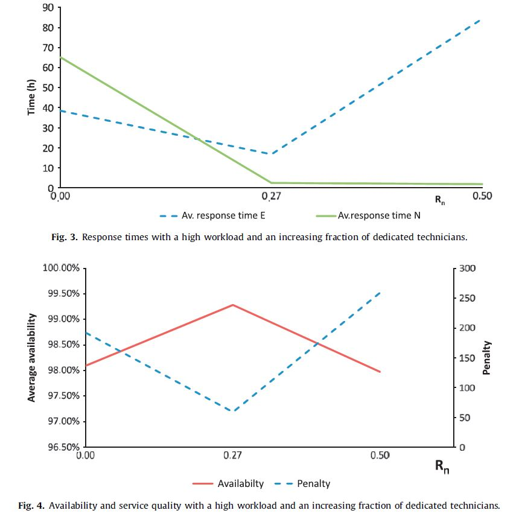
.
İŞ YAPRAĞI |
Yapılan İş Tanımı |
İş Tarihi |
Sayfa Numarası: |
18 |
|---|---|---|---|---|
Makale Ödevi 2 |
… |
İş Yeri Yetkilisi İmza, Kaşe |
||
Tamamen E-FSE istihdamın olduğu (4)’e bakarsak, E-FSE teknisyenlerinin; ‘acil’ onarım işlerine öncelik verdiğini (Olması gereken de budur.) görebiliriz. Acil işlere, bilinçli olarak öncelik verilmeseydi, tepki süresinin, PM bakımının tepki süresinden daha uzun olması gerekirdi. Önceden kapasite ayarlamasının daha zor olmasından ötürü.
Eğer kapasite sıkıntısı ortaya çıkarsa doğal olarak ilk PM işlerini geciktireceklerdir. Bu ertelemeler devam eder, periyodunun %10’nu aşarsa, sağlam olan bu makineler de arızalanacak, E-FSE’ler için ipin ucu hepten kaçmış olacaktır. Buna ‘Emergency Trap’ adını veriyoruz. İşte böyle durumlarda N-FSE’ler bizi bu sarmaldan kurtarabilir. Eklenen ilk N-FSE’ler hem PM hem de acil işlerin tepki süresini azalttı. (5)
Yoğun iş yükü sebebiyle E-FSE’lerin ertelemek zorunda kaldıkları PM işlerine N-FSE’lerin gitmeleri. E-FSE’lerin de sadece acil işlere giderek, acil işlerin yanıt sürelerini kısaltması.
Acil işlere daha hızlı yanıt verebilmesi, PM’leri zamanında yaparak acil işe dönüştürmemesi gibi sebeplerden ötürü A (Kullanabilirlik) ARTAR ve P(Ceza puanı) AZALIR.
Fakat, N-FSE istihdam artışının olumlu etkisi belli bir yerden sonra olumsuza döner.
Bütçe kısıtımız sebebiyle Her 3 N-FSE alımına karşı, 2 E-FSE’yi işten atıyorduk. Fazlaca eklenen N-FSE’ler için yeterli PM işi olmaz ve/veya sayıları azalan E-FSE’ler sadece acil işe gitmesine rağmen acil işlere yetişemezse. Durum (6) yaşanır.
Çeşitli senaryolar için N-FSE eleman istihdamını arttırmak ne zaman akıllı bir tercih olabilir? Potansiyel yararı var mı? Bunun bir ölçüsünü tanımlayabilir miyiz?
.
İŞ YAPRAĞI |
Yapılan İş Tanımı |
İş Tarihi |
Sayfa Numarası: |
19 |
|---|---|---|---|---|
Makale Ödevi 2 |
… |
İş Yeri Yetkilisi İmza, Kaşe |
||
1. DE: Doğrudan Etki:
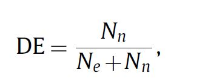
YORUM: N-FSE eklemenin doğrudan yararlı etkisini görebilmek için ‘yeterli sayıda PM işinin’ olması lazım.
2. IE: Dolaylı Etki
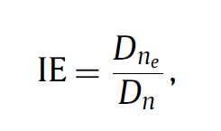
YORUM: Acil Dönüşen İşler Var’sa E-FSE’ler PM’lerini yetiştiremiyor. Görece fazla sayıda N-FSE ekleyerek PM işlerini ona yaptırır, E-FSE’ nin elini rahatlatmış oluruz.
PL(3175,10) makinesi, standart iş yükünde, 2000 saatlik bakım
aralığında:
İşlerin %64 Acil OLMAYAN PM işi,
%17si ise Zamanın yapılmayan PM sebebiyle, ACİL’e dönüşen işlerin
yüzdesini gösteriyor.
Bu rakamlar bize N-FSE eklemenin yararlı olacağını söylüyor.
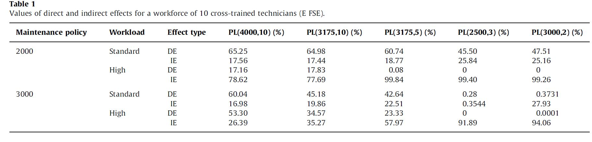

Sebep: İşler yoğun değilken, ‘acil işe dönüşen iş’ daha az olduğu için
IE etkisi az.
.
İŞ YAPRAĞI |
Yapılan İş Tanımı |
İş Tarihi |
Sayfa Numarası: |
20 |
|---|---|---|---|---|
Makale Ödevi 2 |
… |
İş Yeri Yetkilisi İmza, Kaşe |
||
Tablo 2 ve Tablo 3’e bakılırsa, genel olarak, kullanabilirlik ve
hizmet kalitesinin en iyi sonuçları, ya hiç ya da çok az N-FSE eleman
kullanıldığında çıkıyor. Sebebi: Çapraz-eğitimli teknisyenin, her türlü
işe gidebilmesi, seyahat sürelerinin kısalması vd.
Tablo 3’e bakarsak, Neredeyse bütün senaryolarda en düşük ceza puanı(en
yüksek müşteri memnuniyeti), az da olsa N-FSE eklenmesi ile sağlanıyor.
Acile dönüşen işleri azalttığı için.
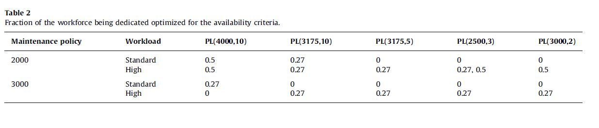
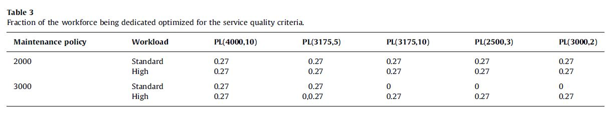
Tablo 4: Sözleşme kapsamı arttıkça N-FSE kullanımı arttırmak mantıklıdır. Neden? Sözleşmeli makine sayısı arttıkça acil arızalar azalacak, acil olmayan PM bakımları artacak. Bakım yapan şirketin işleri daha düzenli olacak(Önceden planlama yapabilecek).
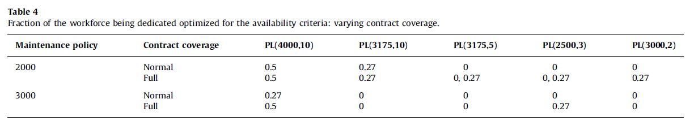
.
İŞ YAPRAĞI |
Yapılan İş Tanımı |
İş Tarihi |
Sayfa Numarası: |
21 |
|---|---|---|---|---|
| Makale Ödevi 2 | … |
İş Yeri Yetkilisi İmza, Kaşe |
||
PL(3175,10) ve PL(4000,10) makinelerin arıza ihtimali zamana göre üstel olarak artıyor. Bu makinelere zamanında yapılan PM bakımı, gelecekteki çok yüksek olasılıklı acil arıza ihtimalini ortadan kaldırırken,


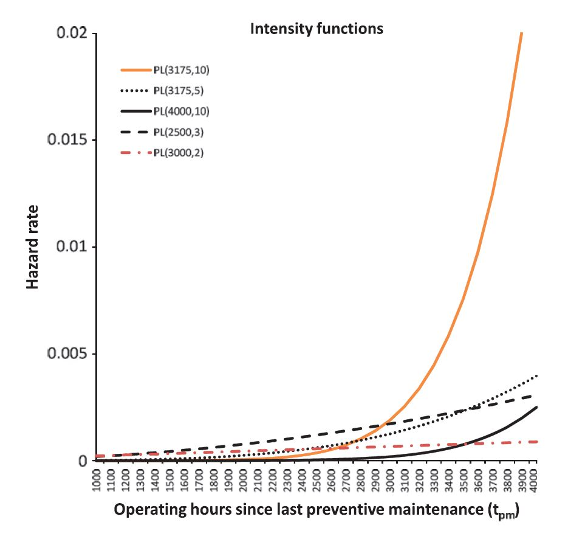
.
İŞ YAPRAĞI |
Yapılan İş Tanımı |
İş Tarihi |
Sayfa Numarası: |
21 |
|---|---|---|---|---|
Makale Ödevi 2 |
… |
İş Yeri Yetkilisi İmza, Kaşe |
||
Çapraz-eğitim politikasında, yazarların ihmal ettiği birkaç noktaya değinmek istiyorum.
Çapraz eğitim almış bir çalışanın doğrudan ya da dolaylı olarak olumlu etkileri olabilir.
Aldığı eğitimlerden sonra artan becerisi, daha çok alanda yetkin olması, çalışanın daha iyi bir ruh haline bürünmesinin üretkenliğine, işinin kalitesine olan olumlu etkisi.
Ayrıca daha iyi maaşla çalışmasının da madde 1.’dekine benzer olumlu sonuçları olur
Şirketinin kendisine sağlamış olduğu eğitimin, çalışanın şirketiyle olan bağını kuvvetlendirip vefa duygusunu arttırır. ( İstisnalar olabilir.)
Müşteriler, daha yetkin çalışanlardan hizmet aldıklarını gördüğünde (Yapılan işin kalitesi aynı olsa dahi.) ödedikleri paranın boşuna olmadığı konusunda daha kolay ikna olabilirler.
Yapılan benzetim deneyine bu etkileri de ekleyebiliriz
Çalışma Saati Garantili Sözleşme Türü
Önleyici bakım ve arıza bakım sözleşmelerinin de ötesinde,
hizmet sağlayanların, makine üzerindeki tüm sorumluğu üzerine aldığı,
çalışma saati garantisi verdiği performansa dayalı sözleşme türüdür.
OEM, kapasitesini ve uygun bakım politikasını kendisi ayarlar. Tam gerektiği sıklıkta doğru PM’leri yapar. Bir arıza oluştuğunda, amacına uygun, en ekonomik çözümü (uygun yedek parça vd.) bularak maliyetlerini en aza indirir. Hizmet alan taraf, makinesini yüksek performansla, güvenle kullanır. Sanırım bu türden sözleşmeler, çıkar çatışmalarını ortadan kaldıran bir KAZAN-KAZAN-KAZAN anlaşması olabilir. KAZANAN taraflardan üçüncüsü ise Genel Ülke Ekonomisi’dir.
Fakat bu türden sözleşmeler yeteri kadar uzun vadeli olmazsa; hizmet sağlayıcı, uzun vadede etkisini gösteren, kısa vadedeki arıza riskini pek fazla arttırmayacak türden bakım işlemlerini ihmal edebilir. Bu yüzden, performansa dayalı sözleşmelerin çalışması için, uzun vadeli olması gerekiyor galiba.
Seyahat.
(Müşterinin sahasındaki iş yapma süresi/Seyahat süresi) oranı,
sektörlere göre farklılık gösterebilir. Makalede incelenen OEM’in bu
oranı; acil işlerinde 2.5, acil olmayanlarda 1.8 imiş.
Operasyon yöneticisinin; acil olmayan işlerde, planlama yapabilme imkanı
olduğu için, ortalama seyahat süresi, acil olan işlerdeki ortalama
seyahat süresine göre daha kısa olacağını düşünerek;
(Acil işlerin ortalama süresi) > (2.5/1.8)*(Acil OLMAYAN işlerin
ortalama süresi) yorumunda bulunabiliriz. Ayrıca, acil işlerin daha
fazla zaman gerektirmesi de şaşırtıcı bir sonuç değildir.
Acaba S.E’ de bu oranlar nedir? 10 civarında olabilir mi?
.
İŞ YAPRAĞI |
Yapılan İş Tanımı |
İş Tarihi |
Sayfa Numarası: |
22 |
|---|---|---|---|---|
Makale Ödevi 2 |
… |
İş Yeri Yetkilisi İmza, Kaşe |
||
SONUÇ
Saha servisi yöneticileri için bu benzetim deneyi, hizmet kalitelerini ve üretkenliklerini arttırma çabasında çok iyi rehber olabilir. Ancak Nasıl?
Yazarların benzetimde kullanmış olduğu modellerin içerdiği muhtelif varsayımlar, denklemler ve katsayılar; şirkete, bakımı yapılan ürüne, müşterilerin kim olduğu, ülkenin genel ekonomik durumuna olarak oldukça farklılık gösterir.
Örneğin benzetimdeki varsayımlardan biri çapraz eğitimli çalışan maliyeti 3 birim iken; özelleşmiş teknisyenin maliyeti 2 birim idi. Başka bir OEM ’de özelleşmiş teknisyenin 1 birim maliyeti var ise özelleşmiş teknisyen kullanmanın değeri artabilir.
Yönetici, iyi bir gözleme dayalı olarak verileri biriktirip bu doğrultuda kendi özgün modellemesini yapması şart. Hatta sonradan öğrenilmiş dersler ya da değişen koşullar olabilir. Bunları da dikkate alıp modelinde düzeltmeler yapması da gerekebilir.
.
x
| [1] | Uday M. Apteb,* Richard B. Chasea, "A history of research in service operations: What’s the big idea? ," Elsevier, 2002. |
|---|---|
| [2] | P.J. & Lambrecht, M.R. Colen, "Cross-training policies in field services," International Journal of Production Economics, Elsevier, böl. 1, no. 138, sayfalar 76-88, 138. |
| [3] | Dunning D. Kruger J, "Unskilled and unaware of it: how difficulties in recognizing one's own incompetence lead to inflated self-assessments.," J Pers Soc Psychol. , 1999. |
| [4] | Reneé Mauborgne W. Chan Kim, "Adil Süreç," Harvard Business Review Dergisi, 1997. |
x
Ertuğrul Bey söylemişti.↩︎
Staj1’de bu bölümü ayrıntılı yazmıştım.↩︎
Bu konudaki bilgi eksikliğimin derecesini gösteren abartısız bir örnek vermek istiyorum. Makale başlığında geçen “operations” kelimesini ilk okuduğumda zihnimde beliren iki anlam olmuştu: 1) Ameliyat 2)Askeri Harekât.↩︎
Yüksel Bey de makaleleri bilerek bu sırayla verdiğini söylemişti.↩︎
Böyle yapmış olsaydım; gerek Yüksel Bey gerek siz Hocalarımın gözünde, ödevimin bir anlamı, değeri olmazdı sanırım.↩︎
Oldukça yaygın rastlanan “Cahil Cesareti Örneklerinin” bir yenisine daha siz hocalarımın, tanıklık etmesini istemem. En kesin cümlelerimde bile gizli bir soru işareti var.↩︎
Öyle ki bazen yazmak istediklerim uzadıkça uzuyor, bir konu bir başka konuyu hatırlatıyor, matruşka bebek gibi açıldıkça açılabiliyordu. Dipnot 6’da bahsettiğim, yazdığımdan emin olmaya çalışmak da süreci uzatıyordu. Bu durumda tam emin olsam da bir noktada durmam gerekiyordu.↩︎
Vaka çalışmasını sansürlemek zorunda kaldım.↩︎